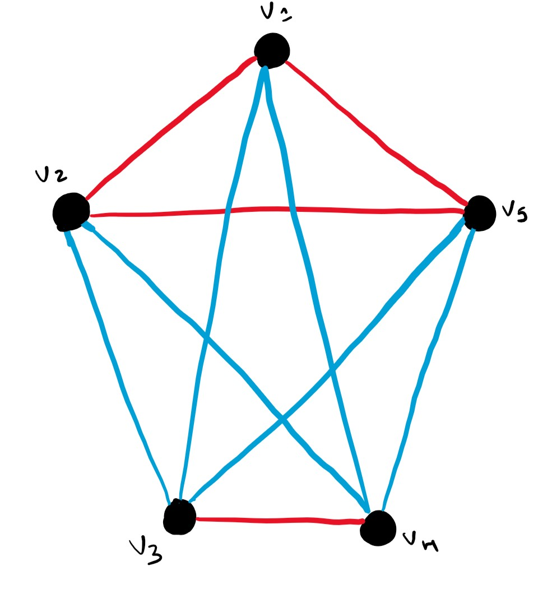
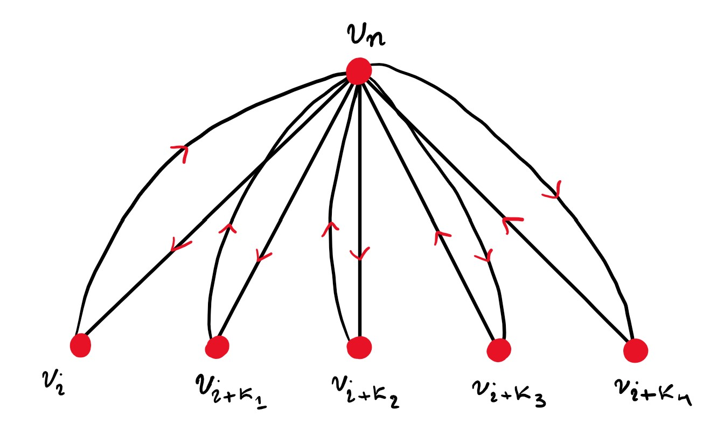

Problem 1.[INMO 2023] Let \(S\) be a finite set of positive integers. Assume that there are precisely \(2023\) ordered pairs \((x, y)\) in \(S\times S\) so that the product \(xy\) is a perfect square. Prove that one can find at least four distinct elements in \(S\) so that none of their pairwise products is a perfect square.
Note: As an example, if \(S = \{1, 2, 4\}\), there are exactly five such ordered pairs: \((1, 1), (1, 4), (2, 2), (4, 1)\), and \((4, 4)\).
Solution. Some of the ideas that might pop-up at first are graph-theory,Ramsey-theory and the box-priciple. I got excited to bombard the problem with graphs. Maybe we can convert this seemingly complex problem into a calssical example of Ramsey theory, which is indeed the acquaintance and stranger problem.
Let me just introduce a complete-graph \(\mathfrak{G}(V,E)\) where \(|V|=2|S|\).
Consider edge colouring where red represents that the adjacent vertices multiply together to give a perfect square. And blue for the exact opposite. Got my hands dirty in search for peculiar behaviours of the colouring.

You could preferably knock out the blue lines as they aren't really necessary. We need to come up with some heuristics or rules to continue on the trail. Try out some graph colourings for different number of vertices. You may notice one thing that you can never find a clique with \(3\) vertices such that \(2\) of the edges are red and the other is blue. Think why!(This reasoning is the biggest hint to the problem).Now as we have got the basic reasoning we need to build up. Also note the number of ordered pairs that a clique with \(\delta\) vertices contributes.
Let's say that if there was just one whole clique, then there would be \(Q_i^2\) number of perfect squares. But we can't do that to a graph with \(2\times 2023\) vertices also same thing follows for \(2\) discrete red cliques and the same for \(3\) discrete cliques as well. Which contradicts that there has to be atleast \(4\) distinct cliques which is actually possible. And yeah we are done! I have come across through many interesting thought processes to this problem, mainly using systematic counting and equivalence relations and stuff. I suppose there was some solution which was done using vector spaces on AoPS, but I assume it as a bit overkill and at the end of the day it was equivalence relations, no offence btw.∎
Problem 2.[IRMO 1989] Each of the \(n\) members of a club is given a different item of information. They are allowed to share the information, but, for security reasons, only in the following way: A pair may communicate by telephone. During a telephone call only one member may speak. The member who speaks may tell the other member all the information s(he) knows. Determine the minimal number of phone calls that are required to convey all the information to each other.
Solution. Once again a graph related question. If you are like who has read Engel's book then probably you will have the strategy and that is extremal principle. Let me name the member who has the highest number of information as neighbour auntie.
Note: There need not be \(1\) neighbour auntie necessarily.
This conjecture seems quite trivial by now. If you think about the contrary where
\(deg_{\mathfrak{G}}(v_i)=1\), then either \(v_i\) will not be able to tell the piece of information s(he) has to \(v_j\) or get information from \(v_j\) where \(j\in\{1,2,\cdots,n\}\) and \(i\ne j\). So consider the below tournament.

Here \(v_n\) is said to be the neighbour auntie. So think of it as, \(v_n\) collects all the information from the fellow club members first which means that s(he) has \(n\) number of information. Then s(he) will tell information to all one by one. So the least number of phone calls required to do so is \(2\cdot(n-1)\). So, this was a pretty simple one. Could this be solved by combinatorics? and yes it's possible. Do try it out.∎
Signing Out:
Do let me know about the mistakes or fake proof if any. Cause often I tend to do fake proofs unknowingly. As this is my first blog, I may not be a good writer. So, tell me your perspective about the corrections and changes that I have to go through my writing style. I will inculcate your reviews if I find it satisfactory. Do mail me about alternate solutions or ideologies which are really mind boggling if any.Bye!